Anleitung für Administratoren und Referenten des Kreisschützenverbands Fallingbostel
Sportjahr vorbereiten · Meldungen prüfen · Startplan bauen · Startplätze vergeben · abrechnen · abschließen
Diese Anleitung beschreibt das Backend des KM-Portals: alles, was im WordPress-Menü unter KM-Portal zu finden ist. Sie richtet sich an den Kreisschützenverband. Die Vereine arbeiten in einer eigenen Oberfläche, die in der Anleitung für die Vereine beschrieben ist.
Zwei Rollen. Ein Administrator sieht und darf alles. Ein Referent ist für bestimmte Wettbewerbsgruppen oder Disziplinen zuständig und arbeitet nur dort – er sieht die übrigen Zeilen, kann sie aber nicht ändern. Wo sich beides unterscheidet, steht es in dieser Anleitung dabei.
Die Startseite des Menüs KM-Portal zeigt für das gewählte Sportjahr alles Wichtige auf einen Blick: die Meldephase, die Kacheln mit den Zahlen und darunter jeden Verein mit seinem Status.
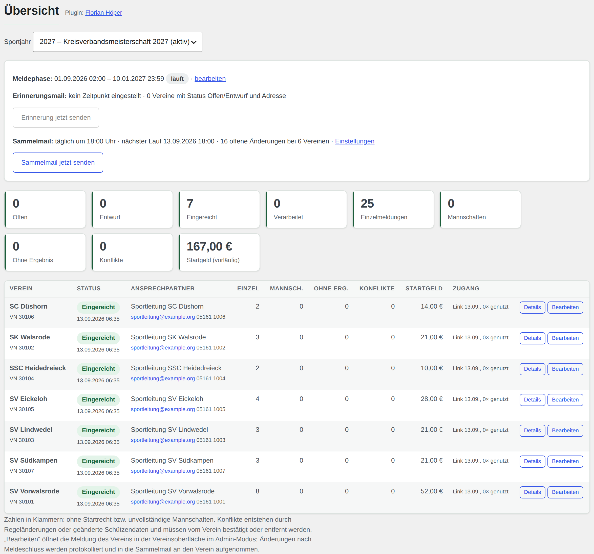
| Spalte | Bedeutung |
|---|---|
| Status | Offen = noch nichts erfasst, Entwurf = der Verein arbeitet, Eingereicht = fertig gemeldet, mit Zeitpunkt. |
| Einzel / Mannsch. | Zahl der gemeldeten Starter und Mannschaften. Eine Zahl in Klammern heißt: so viele davon ohne Startrecht bzw. unvollständige Mannschaften. |
| Ohne Erg. | Meldungen ohne Meldeergebnis. Die braucht die Startplanung – hier lohnt eine Nachfrage. |
| Konflikte | Entstehen durch Regeländerungen oder geänderte Schützendaten. Der Verein muss sie bestätigen oder die Meldung entfernen. |
| Startgeld | Vorläufige Summe nach den hinterlegten Tarifen. |
| Zugang | Wann der letzte Zugangslink erzeugt wurde und wie oft er benutzt wurde. „0× genutzt“ über längere Zeit ist ein Hinweis, dass die Mail nicht angekommen ist. |
Details klappt die Meldung eines Vereins auf. Bearbeiten öffnet die Vereinsoberfläche im Admin-Modus – Sie arbeiten dann so, wie der Verein es sieht, können aber auch nach Meldeschluss ändern. Jede solche Änderung wird protokolliert und landet in der täglichen Sammelmail an den Verein.
Sammelmail. Alle Änderungen, die der KSV nach Meldeschluss an einer Meldung vornimmt, sammelt das Portal und schickt sie dem Verein einmal täglich zur eingestellten Uhrzeit. Sammelmail jetzt senden stößt den Versand sofort an, etwa kurz vor einer Sitzung.
Jedes Sportjahr hat seinen eigenen Satz Klassen, Disziplinen, Regeln und Tarife. So bleiben alte Jahre unverändert, wenn sich die Sportordnung ändert.
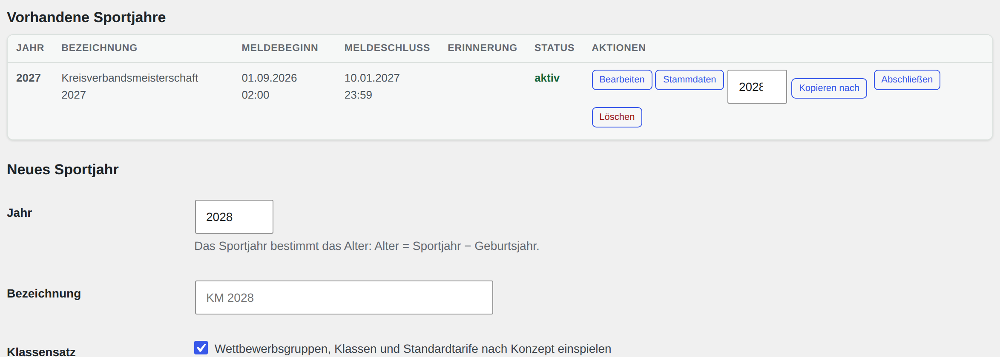
Meldebeginn und Meldeschluss bestimmen alles Weitere. Vor dem Beginn können Vereine nichts erfassen, nach dem Schluss nichts mehr ändern – dann übernimmt der KSV. Beide Zeitpunkte lassen sich jederzeit verschieben.
Die Vereine sind keine WordPress-Benutzer. Sie melden sich mit einem persönlichen Link an, den der KSV per Mail verschickt.
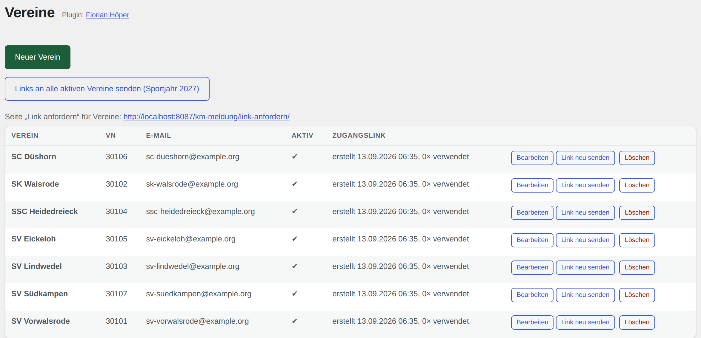
Wenn ein Verein den Link nicht findet: einfach neu senden. Alte Links des Vereins werden dabei ungültig, damit ein weitergeleiteter Link nicht endlos gilt.
Unter Stammdaten steht alles, was die Regel-Engine braucht. Das Bild zeigt die Disziplinenliste des Sportjahres.
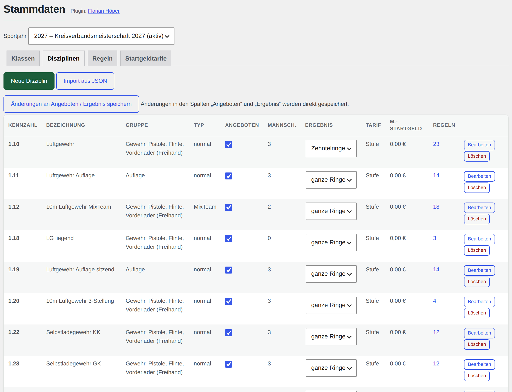
Die beiden Spalten Angeboten und Ergebnis lassen sich in der Liste selbst ändern, ohne die Disziplin zu öffnen. Der Haken bei Angeboten entscheidet, ob die Vereine in dieser Disziplin melden können – so schalten Sie eine Disziplin für ein Jahr ab, ohne sie zu löschen.
Hinter Regeln steht für jede Klasse, ob sie in dieser Disziplin startberechtigt ist, ob sie eine eigene Wertung hat oder in einer anderen Klasse mitstartet, und ob eine Mannschaftswertung vorgesehen ist. Genau daraus berechnet das Portal für jeden Schützen die Startklasse.
Die Tarife hängen an der Tarifstufe der Klasse (Erwachsene, Jugend, Mannschaft …), nicht an der einzelnen Klasse. Ändern Sie einen Tarif, rechnet das Portal die betroffenen Meldungen automatisch neu.
Regeländerung während der Meldephase. Wird eine Regel geändert, prüft das Portal alle vorhandenen Meldungen erneut. Passt eine Meldung nicht mehr, wird sie als Konflikt markiert – sie verschwindet nicht, aber der Verein muss sie bestätigen oder entfernen. Auf der Übersicht sehen Sie sofort, wie viele Konflikte entstanden sind.
Disziplinen und Regeln lassen sich als Datei ein- und auslesen. Das ist der schnellste Weg, ein Jahr aufzusetzen oder den Stand außerhalb des Portals zu prüfen.
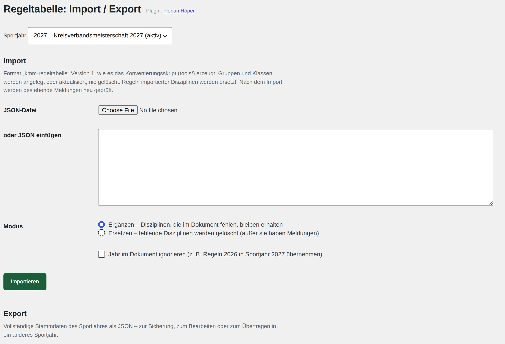
Mit dem Meldeschluss wechselt die Arbeit vom Verein zum KSV. Unter Verarbeitung bekommt jede Einzelmeldung einen Verarbeitungsstatus.
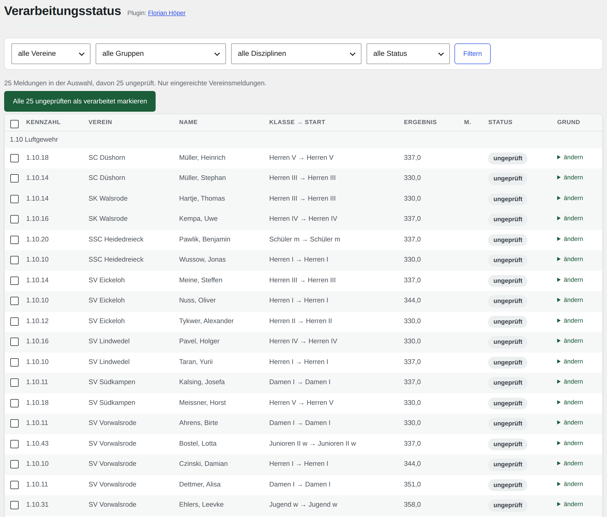
| Status | Bedeutung |
|---|---|
| ungeprüft | Ausgangszustand. Noch niemand hat draufgeschaut. |
| verarbeitet | Startrecht geprüft, Meldung geht so in den Wettkampf. |
| nicht startberechtigt | Mit Grund, zum Beispiel fehlendes Startrecht im Verein. Die Meldung bleibt sichtbar, wird aber nicht eingeplant und nicht exportiert. |
Über die Filter grenzen Sie auf Verein, Wettbewerbsgruppe, Disziplin oder Status ein und setzen den Status für die gefilterte Auswahl auf einmal. Referenten sehen hier alle Zeilen, dürfen aber nur die ihres Bereichs ändern.
Änderungen und Abmeldungen nach Meldeschluss nehmen Sie in der Vereinsoberfläche im Admin-Modus vor (Übersicht → Bearbeiten). Bei einer Abmeldung fragt das Portal, ob das Startgeld berechnet werden soll. Jede Änderung geht in die Sammelmail an den Verein.
Referenten sind ganz normale WordPress-Benutzer, denen das Portal zusätzliche Rechte gibt. Ihre bisherige Rolle bleibt unverändert – es funktioniert also auch mit Benutzern, die schon Redakteur oder Autor sind.
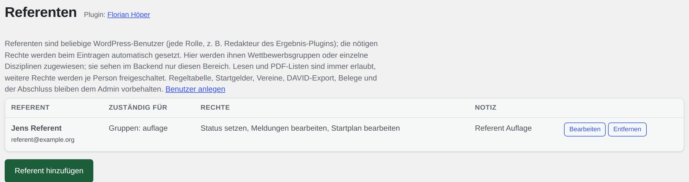
| Recht | Was es erlaubt |
|---|---|
| Status setzen | Verarbeitungsstatus der Einzelmeldungen im eigenen Bereich. |
| Meldungen bearbeiten | Nachmeldung, Abmeldung, Korrektur und Mannschaften im eigenen Bereich. Die Nachmeldungsfreischaltung eines ganzen Vereins bleibt beim Administrator. |
| Startplan bearbeiten | Wettkampftage aufbauen, freigeben, Rest verteilen, Starter verschieben, veröffentlichen – nur wenn alle betroffenen Durchgänge im eigenen Bereich liegen. |
Zuständigkeit ist entweder eine ganze Wettbewerbsgruppe (zum Beispiel Auflage oder Bogen) oder eine einzelne Disziplin über ihre Kennzahl. Sie gilt über Sportjahre hinweg, muss also nur einmal gesetzt werden.
Entfernen löscht nur den Referenteneintrag und die zusätzlichen Rechte. Der WordPress-Benutzer bleibt bestehen.
Schießstände sind Stammdaten und werden einmal angelegt, nicht bei jedem Wettkampftag neu. Ein Schießstand besteht aus Standgruppen: „10 m Stände, 12 × Stand ab Nummer 1, Kapazität 1“ oder „Bogen, 6 × Scheibe, Kapazität 4“.
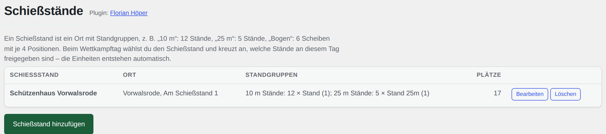
Ein Wettkampftag besteht aus Einheiten (die Stände) und Durchgängen (die Zeiten). Ein Startplatz ist die Kombination aus Durchgang, Einheit und Position.
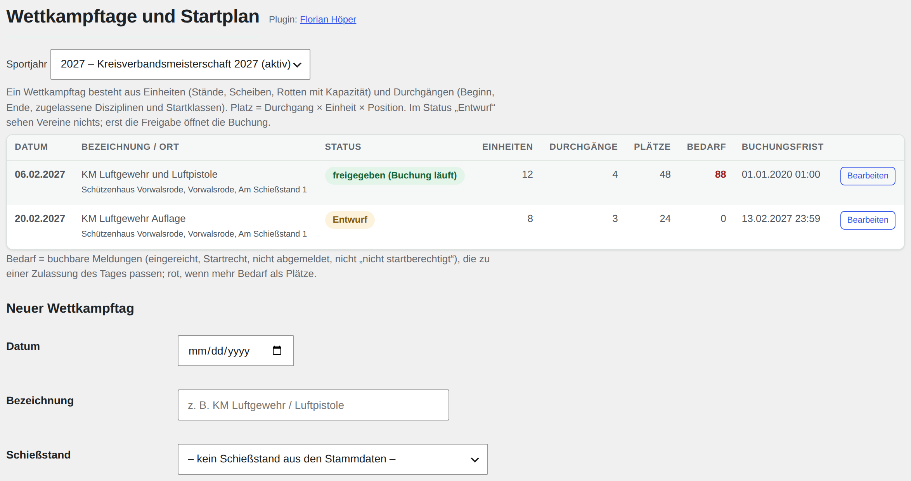
In der Liste steht neben jedem Tag die Zahl der Plätze und der Bedarf – also wie viele buchbare Meldungen zu den Zulassungen dieses Tages passen. Ist der Bedarf größer als die Zahl der Plätze, steht er rot: dann fehlt ein Durchgang oder ein Stand.
Wählen Sie beim Wettkampftag den Schießstand aus, erscheint ein Block mit allen Ständen. Kreuzen Sie an, welche an diesem Tag zur Verfügung stehen.
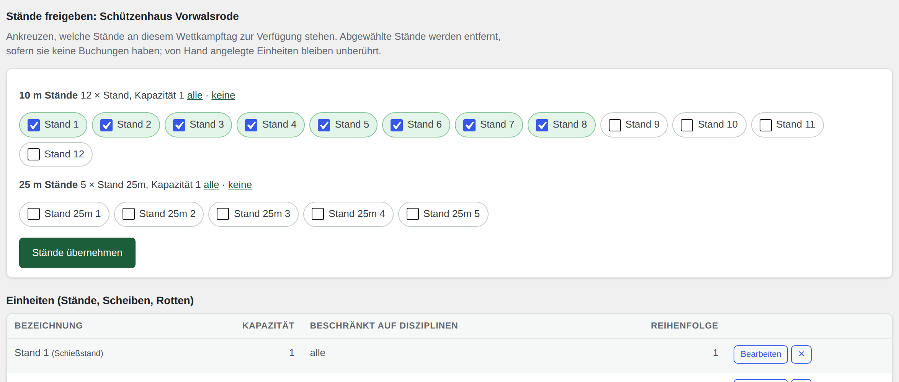
Abgewählte Stände werden wieder entfernt, sofern dort noch nichts gebucht ist. Von Hand angelegte Einheiten bleiben unberührt – Sie können also zusätzlich einen Sonderstand eintragen.
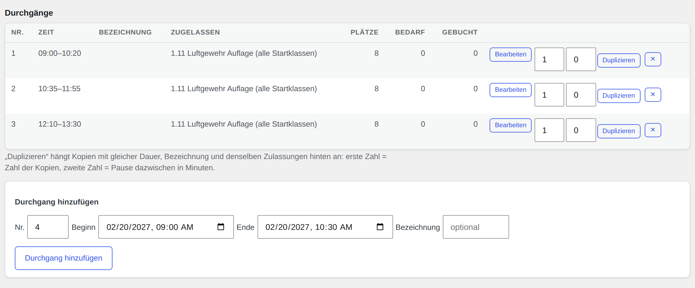
Ein Durchgang ohne Zulassung ist wirkungslos – dort kann niemand buchen. Die Zeile ist deshalb gelb hinterlegt, und die Freigabe ist gesperrt, solange es einen solchen Durchgang gibt.
Im Status Entwurf sehen die Vereine nichts. Mit Freigeben und Vereine benachrichtigen öffnet sich die Buchung: alle Vereine mit passenden Startern bekommen eine Mail mit ihrem Zugangslink, und im Portal erscheint bei ihnen der Reiter „Startplätze“.
Bis zur Buchungsfrist buchen die Vereine selbst. Einige Tage vorher erinnert das Portal automatisch alle Vereine, die noch Starter ohne Platz haben; die Vorlaufzeit stellen Sie in den Einstellungen ein.
Eine Freigabe lässt sich zurücknehmen, solange noch nichts gebucht wurde.
Ist die Frist abgelaufen, können die Vereine nicht mehr buchen. Am Wettkampftag erscheint dann der Block Nach der Buchungsfrist.
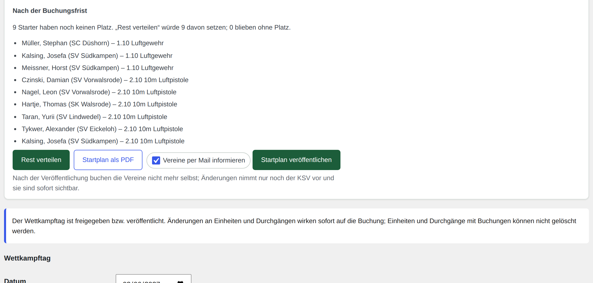
Der Knopf setzt alle übrigen Starter automatisch auf freie, passende Plätze. Vorher sagt Ihnen die Zeile darüber, wie viele davon einen Platz bekämen und wie viele nicht – nichts wird geschrieben, solange Sie nicht klicken.
Verteilt wird in fester Reihenfolge: erst nach Disziplin, dann nach Verein, dann nach Namen. Dieselbe Ausgangslage ergibt also immer dasselbe Ergebnis, und Starter eines Vereins stehen möglichst beieinander. Geprüft werden dabei Zulassung, Disziplinbeschränkung des Standes, Kapazität und Zeitüberschneidungen.
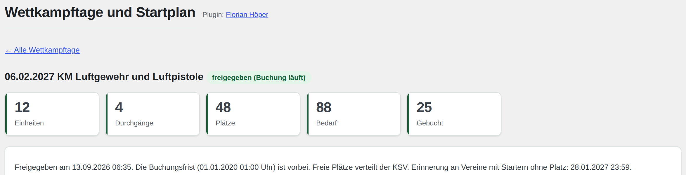
Das Verfahren ist bewusst einfach und sucht nicht die bestmögliche Gesamtverteilung, sondern füllt der Reihe nach auf. Wer keinen Platz bekommt, steht mit Grund in der Liste und lässt sich von Hand setzen.
Unter den Buchungen steht jede Zeile mit einem Auswahlfeld Verschieben nach. Darin stehen alle Plätze des Tages, entweder als „frei“ oder mit dem Namen, der dort steht.
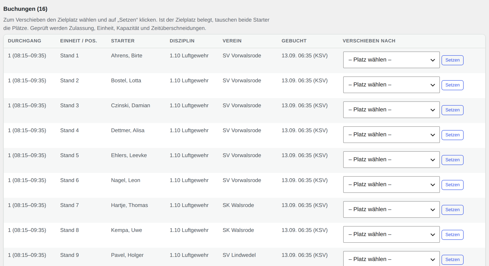
Startplan veröffentlichen macht den Plan öffentlich. Auf Wunsch bekommen die Vereine eine Mail. Ab jetzt buchen sie nicht mehr selbst; Änderungen nimmt nur noch der KSV vor und sie sind sofort sichtbar. Im Buchungsraster der Vereine erscheinen jetzt auch die Starter der anderen Vereine mit Namen.
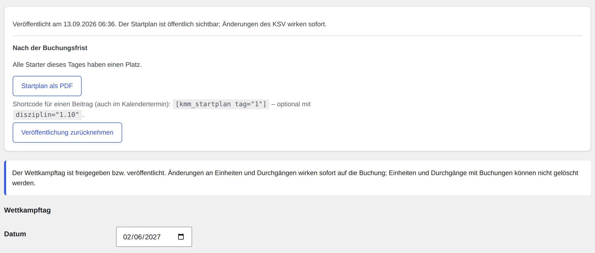
[kmm_startplan tag="1"], lässt sich in jeden Beitrag und jede Seite setzen – auch in einen bestehenden Kalendertermin, unabhängig vom Kalender-Plugin. Mit disziplin="1.10" zeigt er nur eine Disziplin.Die Veröffentlichung lässt sich zurücknehmen; der Plan verschwindet dann wieder aus der Öffentlichkeit.
Für die Abrechnung mit den Vereinen erzeugt das Portal je Verein einen Beleg mit allen Startgeldpositionen.
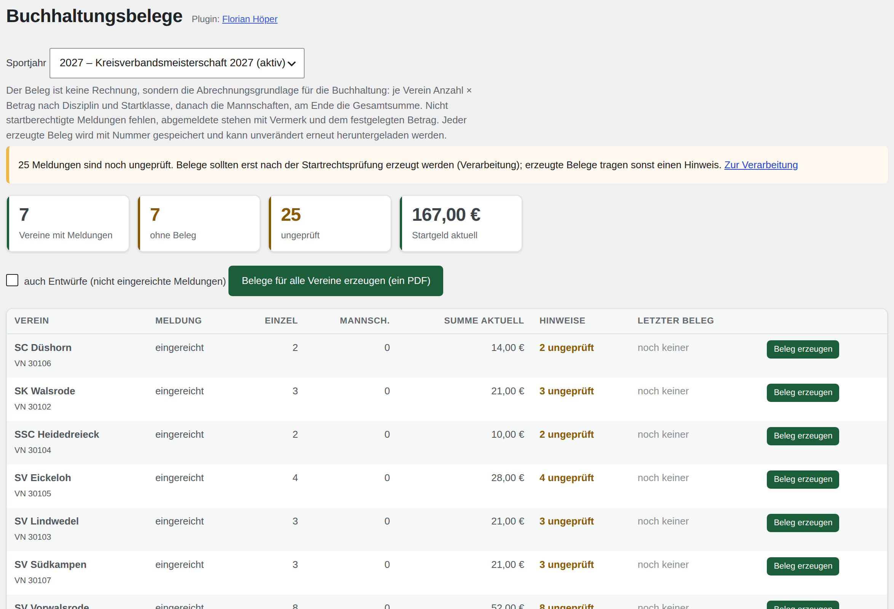
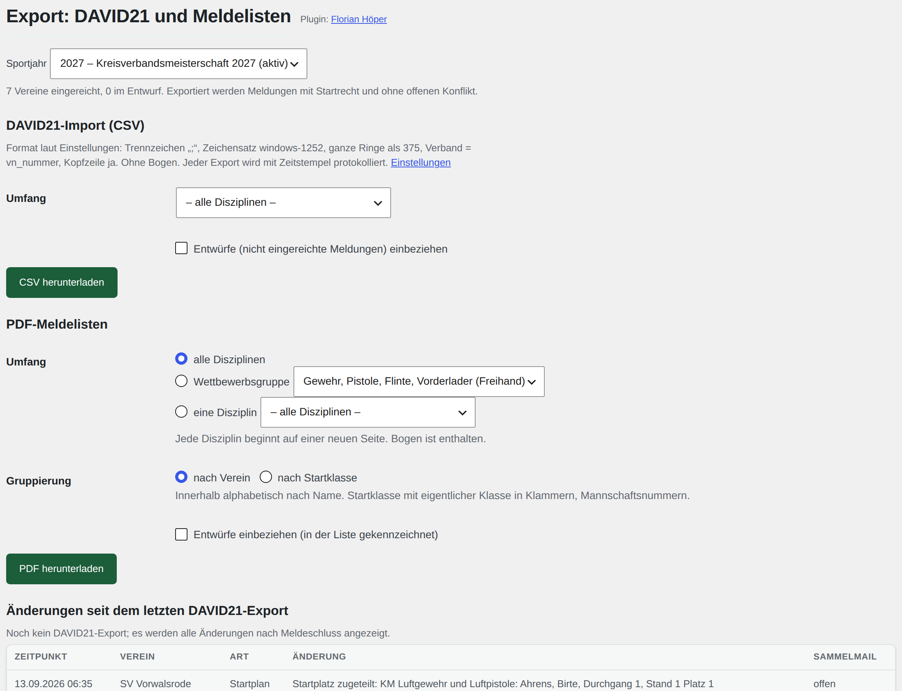
Die CSV-Datei für das Wettkampfprogramm, wahlweise gesamt oder je Disziplin. Enthalten sind nur Meldungen mit Startrecht, die nicht abgemeldet und nicht als „nicht startberechtigt“ markiert sind. Das Zeichenformat stellen Sie in den Einstellungen ein, falls DAVID Umlaute anders erwartet.
Listen zum Ausdrucken, gruppiert nach Disziplin, Klasse oder Verein – etwa als Arbeitsunterlage für die Startplanung oder für die Standaufsicht vor der Veröffentlichung des Startplans.
Jeder Export wird mit Zeitpunkt, Umfang und Zeilenzahl protokolliert. So ist später nachvollziehbar, welcher Stand an DAVID gegangen ist.
Das Protokoll hält fest, wer wann was getan hat – Vereine und KSV gleichermaßen.
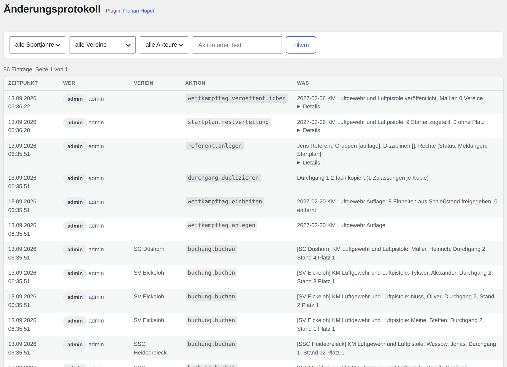
Filtern lässt sich nach Sportjahr, Verein, Akteur und Text. Bei Rückfragen eines Vereins („wir haben das nie geändert“) ist das der schnellste Weg zur Klärung.
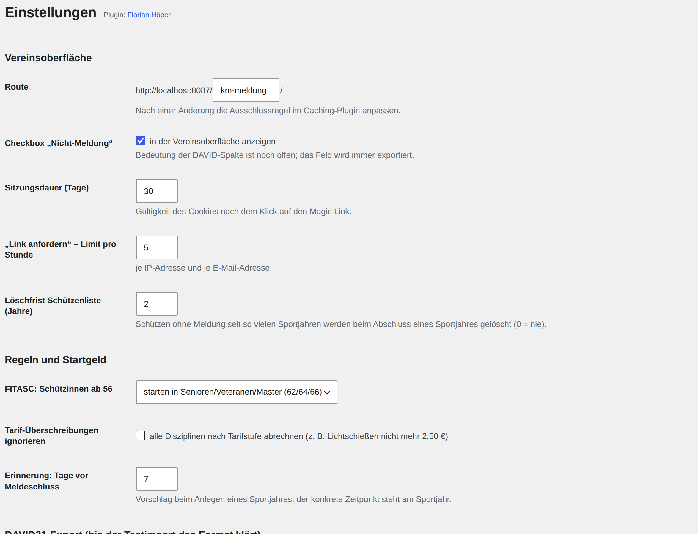
| Einstellung | Wofür |
|---|---|
| Route | Der Pfad der Vereinsoberfläche, standardmäßig /km-meldung/. Nach einer Änderung die Permalinks einmal neu speichern. |
| Absender | Name und Adresse für alle Mails des Portals. |
| Uhrzeit der Sammelmail | Wann die gesammelten Änderungen täglich rausgehen. |
| Erinnerung vor der Buchungsfrist | Wie viele Tage vorher Vereine mit Startern ohne Platz erinnert werden. |
| Offene Punkte der Sportordnung | Einzelne Auslegungsfragen (Nicht-Meldung, FITASC, CSV-Format), die sich ohne Programmänderung umstellen lassen. |
Nach der Meisterschaft wird das Sportjahr abgeschlossen. Das schließt es für Änderungen und entfernt auf Wunsch den Personenbezug aus den Meldungen.
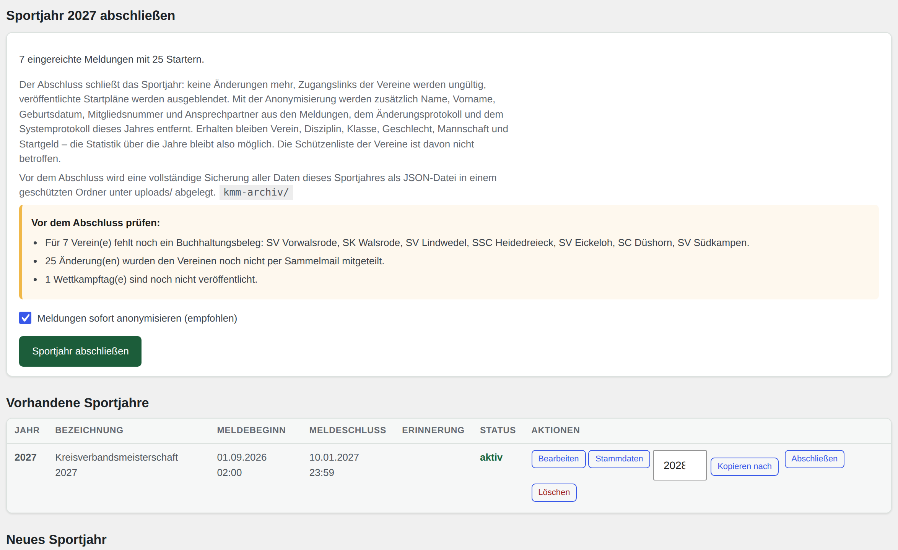
uploads/kmm-archiv/. Der Dateiname wird am Sportjahr vermerkt.Erhalten bleiben Verein, Disziplin, Klasse, Geschlecht, Mannschaft und Startgeld. Teilnehmerzahlen je Verein, Disziplin, Klasse und Jahr bleiben also dauerhaft auswertbar. Die Schützenliste der Vereine ist davon nicht betroffen – sie bleibt für die Folgejahre bestehen.
Die Anonymisierung lässt sich nicht rückgängig machen. Solange Sie sie nicht ausgeführt haben, können Sie den Abschluss zurücknehmen. Danach hilft nur noch die Sicherung aus Schritt 1. Wer erst schließen und später anonymisieren will, nimmt den Haken heraus und klickt zu gegebener Zeit „Jetzt anonymisieren“.
Vor dem Abschluss weist die Seite auf offene Punkte hin: Meldungen, die nie eingereicht wurden, Vereine ohne Beleg, noch nicht versendete Änderungen und Wettkampftage, die nicht veröffentlicht sind. Das sind Hinweise, keine Sperren.
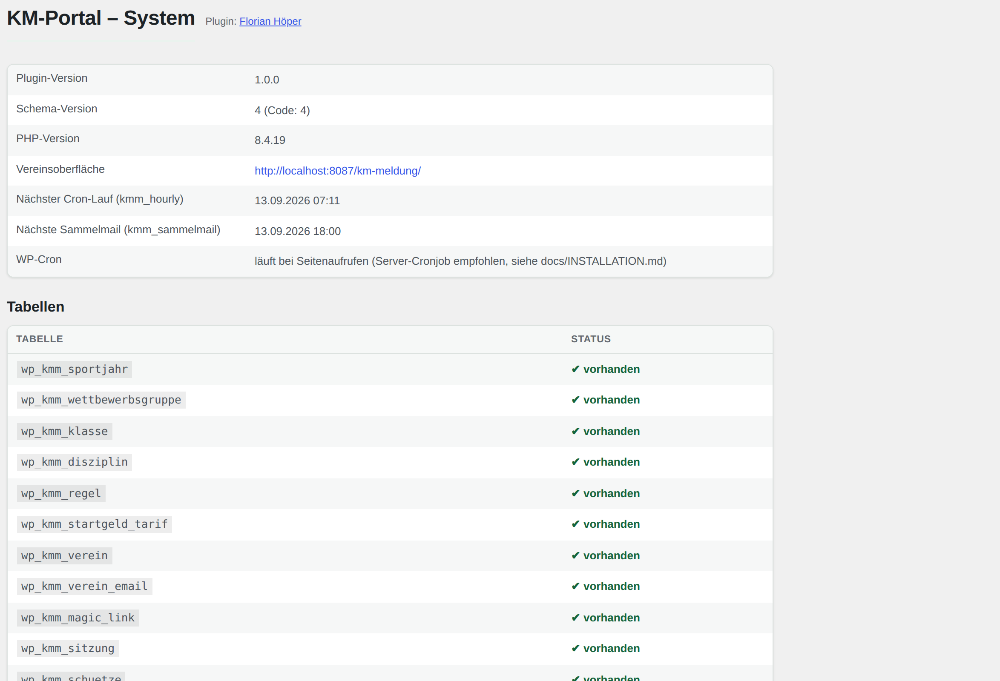
Die Seite zeigt die Schema-Version, ob alle Tabellen vorhanden sind und wann die geplanten Aufgaben zuletzt gelaufen sind.
| Symptom | Wo nachsehen |
|---|---|
| Ein Verein kommt nicht ins Portal | Übersicht → Spalte Zugang. Steht dort „0× genutzt“, kam die Mail vermutlich nicht an: Adresse prüfen, Link neu senden. |
| Keine Mails | Ein SMTP-Plugin muss eingerichtet sein. Der Absender steht in den Einstellungen, der Versand im Protokoll. |
| Sammelmail bleibt aus | System → Cron. Auf Servern mit wenig Besuchern lohnt ein echter Cronjob statt des WordPress-Standards. |
| Nach einem Update fehlt etwas | System → „Migration erneut ausführen“ legt fehlende Tabellen und Spalten an. Bestehende Daten bleiben dabei unberührt. |
| Vereinsoberfläche zeigt alte Inhalte | Die Route /km-meldung/ muss vom Seiten-Cache ausgenommen sein. |
Diese Anleitung beschreibt das KM-Portal in der Version 1.0.0. Die abgebildeten Vereine, Namen und Ergebnisse sind Musterdaten. Fragen zum Portal beantwortet Florian Höper.